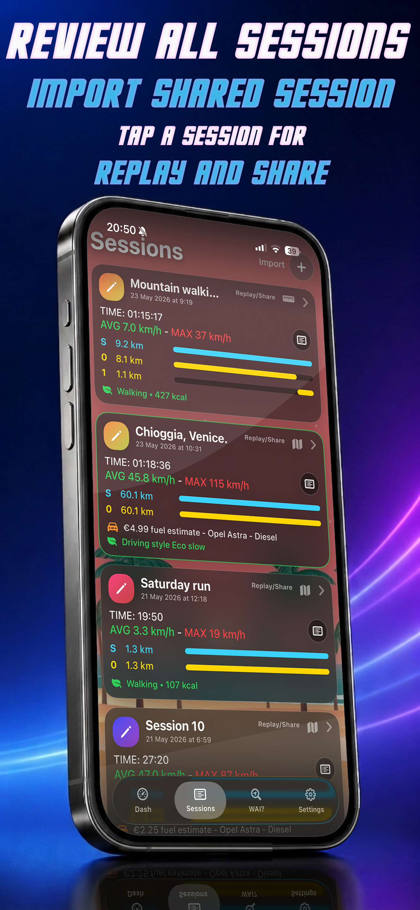
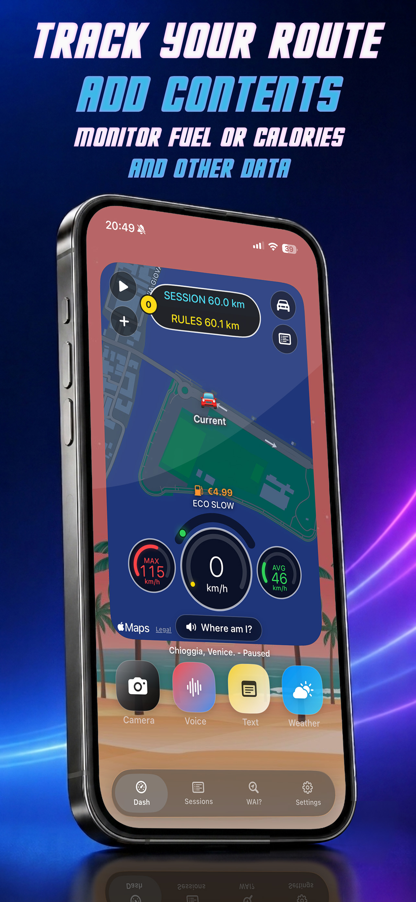
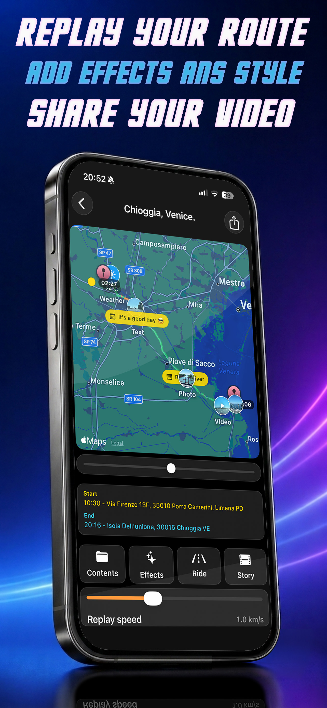
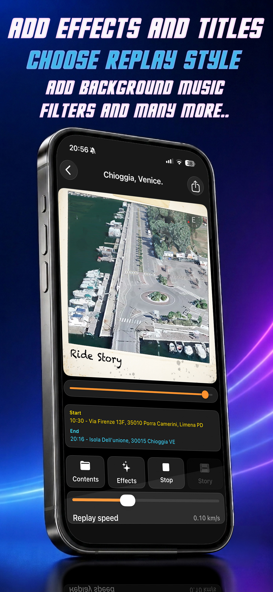
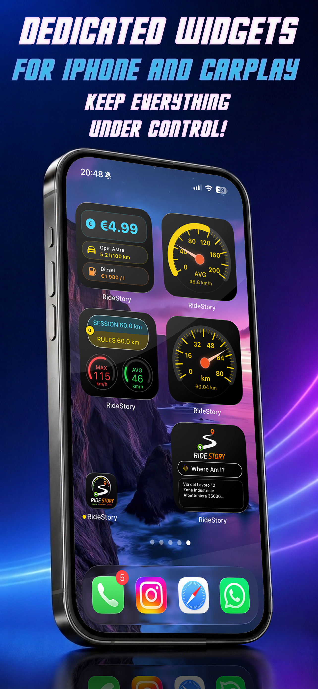
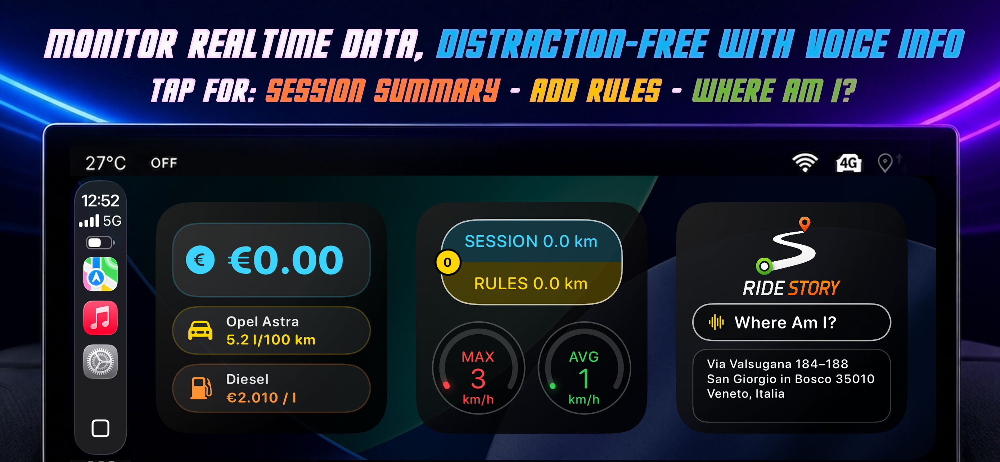
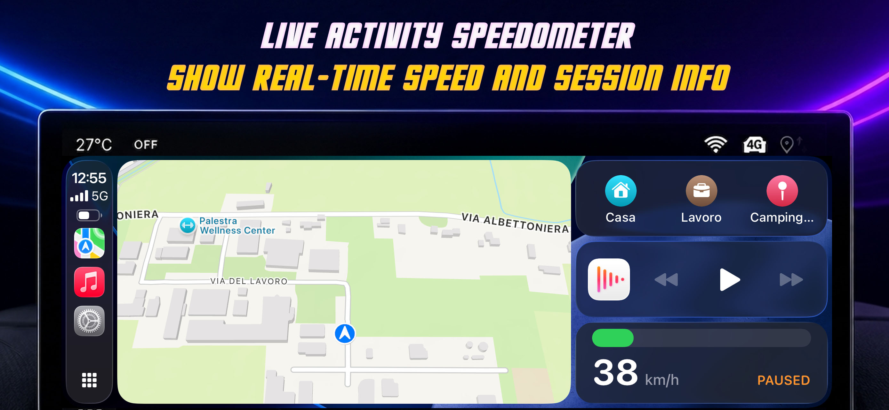

Track every session
Record distance, speed, average and maximum speed, route sections, location points and session time with GPS.
GPS tracking & route storytelling
RideStory records your route by car, motorcycle, bike or on foot, then turns every session into a visual story you can relive and share.


From route to story
Record the journey, attach the moments that made it yours, and return to the complete experience whenever you want.
Record distance, speed, average and maximum speed, route sections, location points and session time with GPS.
Enrich the route with photos, videos, voice notes, text, weather and “Where Am I” points as you travel.
Review session details, estimated fuel cost for motor activities or calories for walking and cycling.

Interactive replay
Follow the path again through an interactive map replay. Choose Ride, Story or Real-style modes, focus on a specific section and control how the story unfolds.

Create and share
Record the finished replay as a shareable video, complete with the animation, route content, audio and effects you selected.
Move complete sessions between supported devices or export the route for compatible map and route tools.
The right information, at a glance

See speed, distance, averages, route sections, fuel cost, calories and current location from supported iOS surfaces.

Monitor real-time data and use voice information while keeping interaction focused.

Keep current speed and essential session information visible during an active route.
CarPlay note: RideStory must remain in the foreground with the iPhone screen active for CarPlay widget use.
Technical features
GPS tracking for car, motorcycle, bike and walking
Ride, Story and Real-style interactive replay modes
Shareable video, GPX and complete session export
Photos, videos, voice notes, text and location points
Fuel cost and calorie estimation by activity
Kilometres, miles and localised voice feedback
Important safety note
RideStory includes a screen protection mode designed to reduce distractions and preserve battery while tracking. Above a certain speed, the driving protection screen activates automatically. Stop in a safe place before adding photos, videos, voice notes or text to your route.
Track the session. Keep the moments. Replay the whole story.
Visit RideStory support